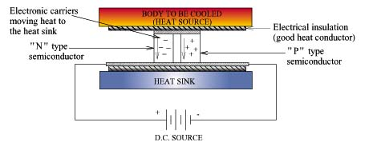

- Peltier Effect
- Thermoelectric coolers operate according to the Peltier effect.
The effect creates a temperature difference by transferring heat between two electrical junctions. A voltage is applied across joined conductors to create an electric current.
When the current flows through the junctions of the two conductors, heat is removed at one junction and cooling occurs. Heat is deposited at the other junction.
The main application of the Peltier effect is cooling. However the Peltier effect can also be used for heating or control of temperature. In every case, a DC voltage is required.
- Elements of the electric cooler
- Thermoelectric coolers from II-IV Marlow act as a solid-state heat pump. Each features an array of alternating n- and p- type semiconductors.
The semiconductors of different type have complementary Peltier coefficients. The array of elements is soldered between two ceramic plates, electrically in series and thermally in parallel.
Solid solutions of bismuth telluride, antimony telluride, and bismuth selenide are the preferred materials for Peltier effect devices because they provide the best performance from 180 to 400 K and can be made both n-type and p-type.
The cooling effect of any unit using thermoelectric coolers is proportional to the number of coolers used. Typically multiple thermoelectric coolers are connected side by side and then placed between two metal plates. .
II-VI Marlow features three different types of thermoelectric coolers including: Thermocyclers, Single Stage, and Multi-Stage.
- Heat Absorption
- Cooling occurs when a current passes through one or more pairs of elements from n- to p-type; there is a decrease in temperature at the junction ("cold side"), resulting in the absorption of heat from the environment.
The heat is carried along the elements by electron transport and released on the opposite ("hot") side as the electrons move from a high- to low-energy state.
The Peltier heat absorption is given by Q = P (Peltier Coefficient) I (current) t (time). A single stage thermoelectric cooler can produce a maximum temperature difference
of about 70 degrees Celsius. However, II-VI Marlow’s Triton ICE Thermoelectric Cooler will chill electronics as much as 2 degrees Celsius below current market offerings.
- Benefits
- Thermoelectric coolers offer a myriad of benefits when traditional cooling methods are unsuited. Additionally, thermoelectric coolers are environmentally safer than other cooling units in the market.
Some benefits of using thermoelectric cooling in electronic devices include:
- No chlorofluorocarbons or refrigerant emissions
- Low maintenance
- Long life
- Controllable
- Compatible with extreme environments or remote locations
- Capable of cooling far below ambient temperatures
- Performance independent of orientation
Additionally, coolers can dramatically improve
customer electronic systems in the following problem areas:
- Thermal performance
- Cost
- Noise
- Weight
- Efficiency
- Applications:
-
- THERMOCYCLERS: One application of Thermocyclers is in aerospace and defense technologies. Because IV-Marlow’s Thermocycler technology can withstand extreme conditions, these modules are ideal for use in space or similar demanding conditions.
Thermocyclers also are commonly used in biomedical settings to amplify DNA and RNA samples by polymerase chain reaction (PCR). Thermocyclers amplify segments of DNA by systematically raising and lowering the temperature of a block that holds the PCR reaction mixture. Cyclers offer a reliable option viable for over 500,000 thermal cycles. II-VI Marlow’s XLT series operate at the heart of PCR thermal cycler modules, unparalleled in their ability to fulfill PCR requirements including thermal uniformity, repeatability, accuracy and speed.
- SINGLE-STAGE THERMOELECTRIC COOLERS:
Single-Stage Thermoelectric Coolers are designed for medium to low heat pumping capacity requirements. Typical applications include: laser diode arrays in fiber optic systems, and maintaining constant viscosity in ink jet printers.
II-VI Marlow also offers the Triton ICETM thermoelectric cooling module, which can chill electronics as much as 2°C below current market offerings. Triton ICE™ is designed primarily for the industrial and medical manufacturing sectors but can provide solutions for all market applications that require superb cooling capacity.